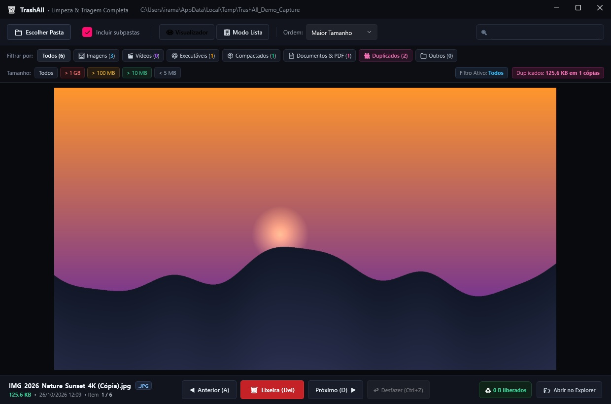

Passe o pente fino em pastas cheias de fotos, vídeos e capturas de tela usando apenas o teclado. Rápido, leve e com total segurança da Lixeira do Windows.

Projetado com foco em utilidade direta, velocidade e simplicidade técnica.
Exibe o primeiro arquivo na tela imediatamente e processa o restante da pasta em segundo plano, evitando travamentos em diretórios com milhares de itens.
Pressione D para avançar, A para voltar e Del para enviar para a lixeira. A triagem é contínua e sem necessidade do mouse.
Nenhum arquivo é excluído de forma destrutiva. O descarte vai direto para a Lixeira nativa do Windows e pode ser restaurado a qualquer momento com Ctrl+Z.
Agrupa arquivos idênticos por tamanho e valida por hash criptográfico. Mostra lado a lado o original e a cópia excedente para você liberar espaço com precisão.
Inspeciona a árvore interna de arquivos compactados (.zip, .jar, .apk) sem precisar extrair nada para o disco rígido antes de tomar uma decisão.
Não exige instalação, não altera o registro do Windows e não cria pastas ocultas. Baixe, descompacte e use diretamente de onde estiver.
Todas as ações principais contam com teclas dedicadas para operação rápida.
| Tecla de Atalho | Ação | Comportamento no Utilitário |
|---|---|---|
| D ou → | Próximo Arquivo | Carrega imediatamente o próximo arquivo da pasta selecionada. |
| A ou ← | Arquivo Anterior | Retorna para a mídia anterior para conferência. |
| Delete, X ou Backspace | Mover para a Lixeira | Envia o arquivo para a Lixeira do Windows e contabiliza os bytes liberados. |
| Ctrl + Z | Desfazer Exclusão | Restaura imediatamente da Lixeira o último arquivo descartado. |
| Espaço | Play / Pausar Vídeo | Inicia ou pausa a reprodução de arquivos MP4, MKV e clipes. |
| F ou F11 | Alternar Tela Cheia | Maximiza a visualização para conferência detalhada em alta resolução. |
Interface em tema escuro Mica com visualizador de mídia, barra de categorias e status em tempo real.
Escolha o pacote adequado para o seu ambiente. Todas as edições são 100% gratuitas.
| Pacote | Plataforma | Requisitos | Tipo | Download |
|---|---|---|---|---|
|
TrashAll Portátil (.zip)
Recomendado para a maioria dos usuários
|
Windows 10 / 11 (64-bit) | Nenhum (Tudo embutido) | Self-Contained x64 | Baixar Portátil |
|
TrashAll Versão Leve (.zip)
Para programadores e máquinas com .NET
|
Windows 10 / 11 (64-bit) | Requer .NET 8 Runtime | Framework-Dependent | Baixar Leve |
|
Código-Fonte Completo (.zip)
Repositório oficial no GitHub
|
Qualquer SO | C# 12 e .NET 8 SDK | Código Aberto | Baixar Código |
SHA256SUMS.txt.